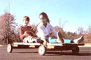
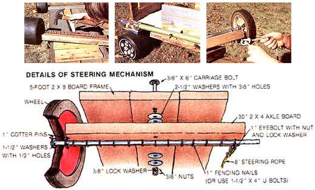

MOTHER feels strongly that youths can be creative "doers," working toward more ecological and self-reliant lifestyles - whether their tasks be raising chickens on a farm or maintaining rooftop container gardens in the city. To support the endeavors of our often overlooked "underage" citizens, we're glad to publish well-written articles from younger children and teenagers concerning projects they've undertaken.
It all began when my dad told me about the soapbox derby cars that he built when he was a kid. His stories made me want to build a motorless go-cart of my own. I didn't have any money to spend, though, so I used stuff we already had. At the time, I had two brokendown Green Machines, which are low-riding, big-wheeled, plastic tricycles. I also had some white cedar 2-by-8s left over from an old sun deck that my dad said we kids could use for projects. With that and a few other odds and ends-mostly from my "junk jar" - I put together my first go-cart, the Thunder Racer!
I used the axle with attached wheels from the back of both Green Machines for my go-cart wheels. I built a basic frame from 2-by-8s and added side and back walls (my younger sister insisted that she wouldn't ride in the go-cart unless it had sides). I lined the seat with carpet for comfort, made a steering mechanism so I could turn it with a rope, and even put on a brake shoe - made from an old shoe, naturally!
To find out how to make a cart like mine, read the section below, "Ten Simple Steps for Building a Really Good Go-Cart." Right now, though, let me tell you about some of the experiences I've had with my downhill racer. I made two big, important mistakes right off: First, I built the frame in a rectangle shape that was just wide enough to fit between the wheels. But that meant there wasn't enough room for the wheels to turn sideways at all, so I couldn't steer! I had to tear the go-cart frame halfway apart (which was a lot of work I could have saved myself if I had thought ahead), then put it back together again with the front end cut narrower. Then there was room for the board with the axle on it to pivot.
My second big mistake was using cedarwood for the sides of my go-cart. It made very thick, heavy walls that I felt would last forever. But they didn't. When my older brother and his friend tried to ride on the cart together, the two of them ran smack into a brick mailbox, and the sides of the go-cart split in half. (The two boys nearly did, too!)
I asked my dad how to fix it, and he suggested using thick plywood for the sides, since that wouldn't split. He also said I should require drivers to have a license or insurance to cover damages. Ha ha ...
After I fixed the sides of the go-cart with plywood, it was sturdy. It went amazingly fast, too. One of my friends, Eric Eidsvik, had a gasoline-powered go-cart. When he saw how much fun we were having using only people power, he tried to race mine without using his cart's engine. Eric thought that because his was a commercially made go-cart, it would cremate mine. So he brought his to the top of my racing hill at a nearby church parking lot.
Eric told me that since his go-cart was so heavy, it would go like the wind. Some of the neighborhood kids gathered around to watch and make bets and harass us with cheers and silliness. Well, I yelled "Go!" and, for good measure, gave him a push before I jumped on my own cart. He took off like a snail! I took off like a rabbit! He made about five feet for every ten yards that I covered.
So now I'm acting as a "consultant" to show Eric how to build his own wooden go-cart like mine.
Everyone in the neighborhood wanted rides on my Thunder Racer, so I soon saw that we needed to have another cart. I made the second one sturdier (I wanted to be able to use it for hauling things) and changed a few other things, as well (I learn as I go!). And since this time I used wheels from a busted lawn mower my dad had, I had to make my own axle.
I've had a lot of races between the Heavy Hauler (my second go-cart) and the Thunder Racer. Even though they both weigh about the same, the Heavy Hauler definitely goes slower. I think the thin lawn mower wheels of the second one just aren't as fast as those very sturdy, broad, Big Wheel-type wheels.
I like the longer axles the Heavy Hauler has, though. They made the cart easier to build (I didn't need to make the front end narrower), keep the cart very stable (although I've never come close to tipping over in either go-cart), and let me steer it more sharply. So most of the instructions in my section on building your own go-cart are based on the Heavy Hauler.
Sometimes when I take one of my carts out to ride it, I see friends that I haven't seen in a long time, or make new friends. Other times, a bunch of kids out riding on their bikes will stop and ask for a ride. Usually, they at least want to ask a lot of questions, because they've never seen anything quite like it. And when I tell them that I made the go-cart myself, they act like I'm some kind of wizard or something.
At times like that, knowing I built my go-carts myself is almost as much fun as riding them. Why don't you try it? Building a cart takes a bit of careful planning and attention to detail.
But it is definitely worth the effort.
|
 ROBERT W. MATTHEWS Greg Matthews' "Heavy Hauler" go-cart. |
 ROBERT W. MATTHEWS Top left: Greg used fencing nails to fasten the wheel-and-axis units onto his Thunder Racer. Note how he had to slant this car's floorboards in at the front so he could turn its wheels. Top center: The Thunder Racer's brake shoe was made from a real shoe! Top right: Greg put a 1-inch eyebolt near Heavy Hauler's lawn mower wheels to secure his steering rope. Bottom: Details of the go-cart's steering mechanism. |
ROBERT W. MATTHEWS Mother feels strongly that youth can be creative "doers." |
|
ROBERT W. MATTHEWS To support the endeavors of our often overlooked "underage" citizens, we're glad to publish well-written articles from younger children and teenagers concering projects they've undertaken. |
|
|